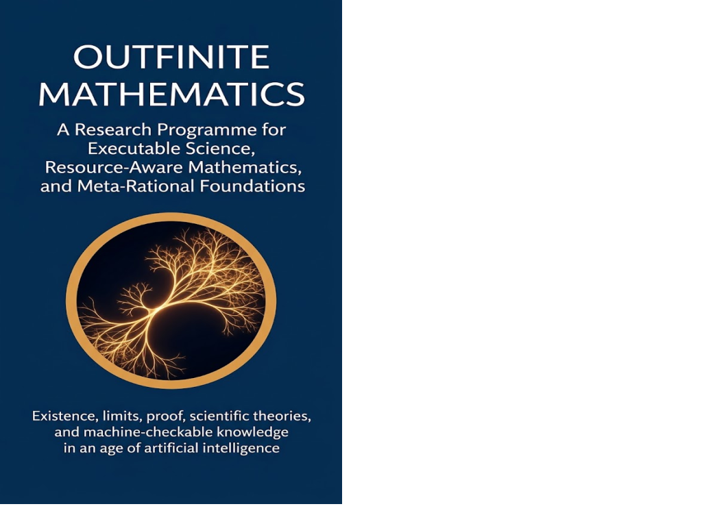

Executable Science · Axiologic Research Editions
Outfinite Mathematics
A Research Programme for Executable Science, Resource-Aware Mathematics, and Meta-Rational Foundations
What changes when a mathematical claim must survive not only proof, but also realization, measurement, computation, cost and machine interpretation?
Mathematics at the point of contact
Classical mathematics gives us extraordinary languages for ideal structures. But the world increasingly asks it to govern finite computers, instruments, institutions, evolving theories and AI systems that must say what they know. In those settings, the distance between a rule and its realization can no longer be treated as an afterthought.
Outfinite Mathematics asks whether that distance can become a scientific object. Its central concern is not to abolish infinity or declare established mathematics mistaken. It is to make frontiers explicit: where a construction operates, what resources it presupposes, how it can extend, what validates it, and what happens when its envelope is exceeded.
From an elegant claim to an executable one
What kind of thing exists? The programme separates ideal objects, physical objects, computed objects and institutional objects, then asks what passes between them.
Where does proof stop? A result can be rigorous and still leave questions about observation, cost, realization or interpretation. Those questions deserve their own formal vocabulary.
Can machine-checkable knowledge remain open? The aim is neither a final foundation nor a relativist escape from proof, but a meta-rational organization of theories whose scope, dependencies and revision paths are inspectable.
A frontier is not where reason ends; it is where reason must reveal its conditions of continuation.
A programme rather than a completed theory
This is an invitation to research, not a claim that a finished replacement for mathematics has arrived. It lays out motivations, candidate concepts, possible formal directions and hard objections. That honesty is part of the programme: any future outfinite science must earn its place through definitions, theorems, implementations, empirical use and criticism.